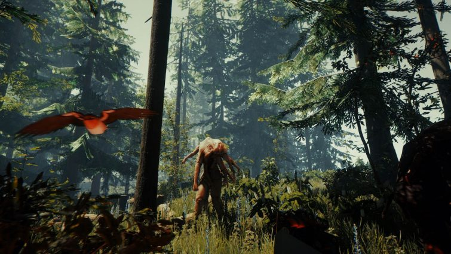

The Forest
The Forest is a first person survival horror game, set on a gorgeous island in the middle of the pacific. The main character is the only survivor of a plane crash (besides his son), and must both fight to survive and rescue his son from the nefarious forces at play in this tropical "paradise". The game can be played both alone, as a single-player game< and as a cooperative game where you work with other real players to survive and slowly finish the story. I had a very fun time playing this game, and beating the story. I should add that I did play with friends, which can dictate the mileage you get out of this game, but to me it was excellent. The graphics are absolutely amazing, and the atmosphere is like that of the best horror movies. The island is inhabited by a variety of fauna, along with pale, humanoid cannibals and multi-limbed monstrosities, like the one shown in the picture above. I would recommend this game to anyone who is not squeamish and easily frightened.